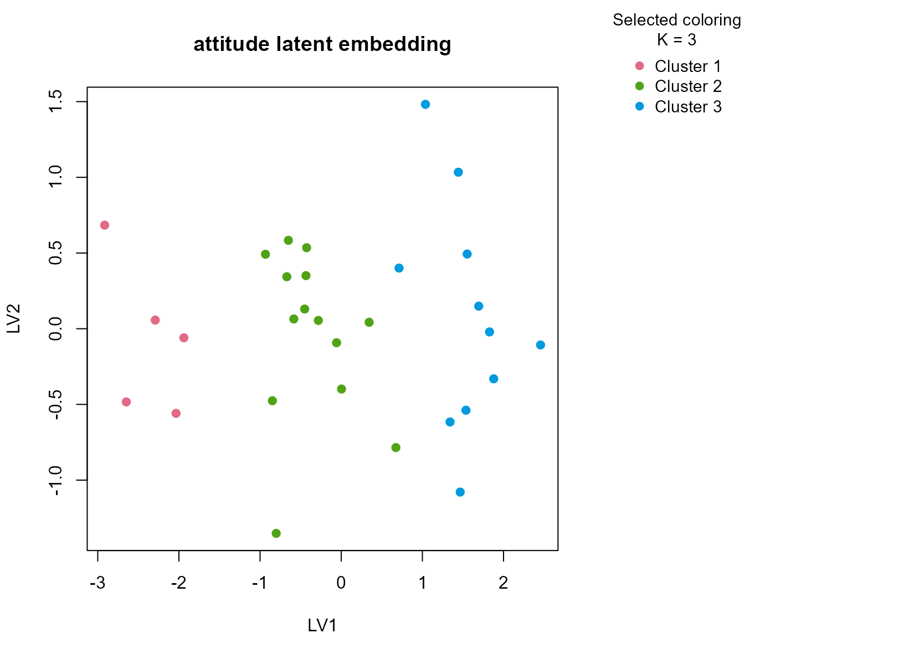
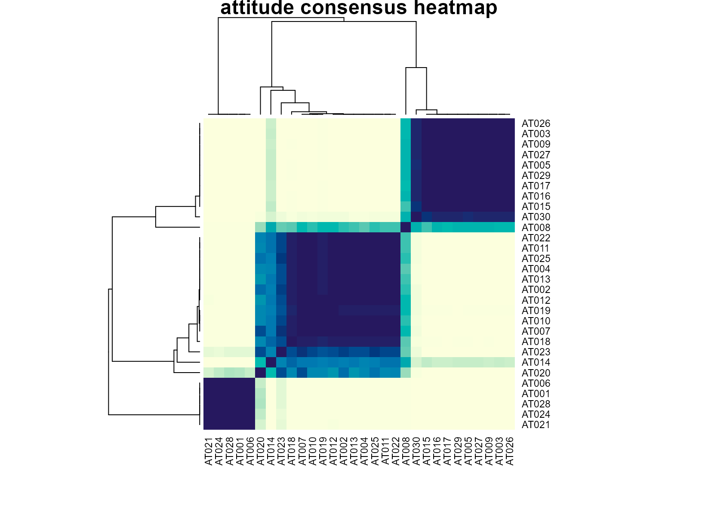

Background
attitude contains ratings of managerial behavior and
workplace climate. It is not a biomedical dataset, but it is valuable
because it represents the kind of small organizational table where
analysts are tempted to over-cluster weak structure. Most variables are
numeric ratings, and we add one ordinal summary band to preserve the
mixed-table framing.
Objective
The objective is to determine whether the ratings support stable workplace climate groupings and, if they do, whether those groups can be interpreted in terms of complaints, learning opportunities, raises, and overall rating level.
Data preparation
att_df <- as.data.frame(attitude)
att_df$sample_id <- sprintf("AT%03d", seq_len(nrow(att_df)))
att_df$rating_band <- ordered(
cut(att_df$rating, breaks = c(-Inf, 55, 70, Inf), labels = c("low", "mid", "high")),
levels = c("low", "mid", "high")
)
analysis_att <- att_df[, c("sample_id", "rating", "complaints", "privileges", "learning", "raises", "rating_band")]
head(analysis_att)
#> sample_id rating complaints privileges learning raises rating_band
#> 1 AT001 43 51 30 39 61 low
#> 2 AT002 63 64 51 54 63 mid
#> 3 AT003 71 70 68 69 76 high
#> 4 AT004 61 63 45 47 54 mid
#> 5 AT005 81 78 56 66 71 high
#> 6 AT006 43 55 49 44 54 lowAnalysis
fit_att <- fit_uccdf(
analysis_att,
id_column = "sample_id",
candidate_k = 1:5,
n_resamples = 20,
n_null = 39,
row_fraction = 0.85,
col_fraction = 0.85,
seed = 808
)
fit_att$selection
#> $alpha
#> [1] 0.05
#>
#> $global_p_value
#> [1] 0.025
#>
#> $null_family
#> [1] "independence_marginal_null"
#>
#> $detected_structure
#> [1] TRUE
#>
#> $best_exploratory_k
#> [1] 3
#>
#> $best_supported_k
#> [1] 3
select_k(fit_att)
#> k stability null_mean null_sd stability_excess z_score p_value supported
#> 1 2 0.5913651 0.2575833 0.06436600 0.3337819 5.185686 0.025 TRUE
#> 2 3 0.8062773 0.2820927 0.08835490 0.5241846 5.932716 0.025 TRUE
#> 3 4 0.7718264 0.3921837 0.06806376 0.3796427 5.577750 0.025 TRUE
#> 4 5 0.7566165 0.4964798 0.06044332 0.2601367 4.303811 0.025 TRUE
#> objective
#> 1 5.047056
#> 2 5.712994
#> 3 4.300491
#> 4 1.981924Results
att_assign <- merge(augment(fit_att), att_df, by.x = "row_id", by.y = "sample_id", all.x = TRUE)
head(att_assign)
#> row_id cluster confidence ambiguity exploratory_cluster
#> 1 AT001 1 1.0000000 1.912589e-10 1
#> 2 AT002 2 0.9522964 4.770358e-02 2
#> 3 AT003 3 0.9479303 5.206972e-02 3
#> 4 AT004 2 0.9437118 5.628816e-02 2
#> 5 AT005 3 0.9478214 5.217865e-02 3
#> 6 AT006 1 1.0000000 1.970459e-10 1
#> exploratory_confidence exploratory_ambiguity assignment_mode selected_k
#> 1 1.0000000 1.912589e-10 selected 3
#> 2 0.9522964 4.770358e-02 selected 3
#> 3 0.9479303 5.206972e-02 selected 3
#> 4 0.9437118 5.628816e-02 selected 3
#> 5 0.9478214 5.217865e-02 selected 3
#> 6 1.0000000 1.970459e-10 selected 3
#> exploratory_k rating complaints privileges learning raises critical advance
#> 1 3 43 51 30 39 61 92 45
#> 2 3 63 64 51 54 63 73 47
#> 3 3 71 70 68 69 76 86 48
#> 4 3 61 63 45 47 54 84 35
#> 5 3 81 78 56 66 71 83 47
#> 6 3 43 55 49 44 54 49 34
#> rating_band
#> 1 low
#> 2 mid
#> 3 high
#> 4 mid
#> 5 high
#> 6 low
aggregate(
cbind(rating, complaints, privileges, learning, raises, confidence) ~ cluster,
att_assign,
function(x) round(mean(x, na.rm = TRUE), 2)
)
#> cluster rating complaints privileges learning raises confidence
#> 1 1 44.80 48.00 39.60 44.00 51.80 1.00
#> 2 2 62.64 63.00 53.43 52.43 61.79 0.91
#> 3 3 76.18 79.64 58.91 67.00 74.09 0.91
table(att_assign$cluster, att_assign$rating_band)
#>
#> low mid high
#> 1 5 0 0
#> 2 2 12 0
#> 3 0 1 10
round(prop.table(table(att_assign$cluster, att_assign$rating_band), margin = 1), 3)
#>
#> low mid high
#> 1 1.000 0.000 0.000
#> 2 0.143 0.857 0.000
#> 3 0.000 0.091 0.909
plot_embedding(fit_att, color_by = "selected", main = "attitude latent embedding")
plot_consensus_heatmap(fit_att, main = "attitude consensus heatmap")
Discussion
The selected three-cluster solution is useful because it typically separates a more positive climate regime, a middling group, and a less favorable ratings profile. The numeric summaries are the key evidence: differences in complaints, learning, and raises move with the clusters rather than only the overall rating. The ordinal rating band helps show that the solution is anchored in perceived managerial quality but not reducible to a single thresholded variable.
This is a strong example of why stability matters. On a small ratings
table it would be easy to force a higher K and tell an
elaborate story. The consensus workflow instead returns only the
segmentation that remains reproducible across resamples and views.
Interpretation
For attitude, the clusters should be interpreted as
stable workplace-climate profiles ranging from more favorable to less
favorable managerial environments. They are descriptive summaries of the
rating table, not latent organizational types. Their value lies in
producing a compact exploratory structure that can be explained directly
from the measured variables.